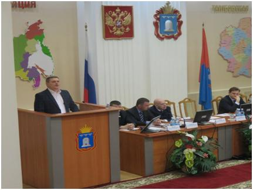
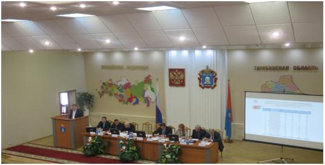

В администрации Тамбовской области состоялось расширенное заседание Координационного совета по развитию малого и среднего предпринимательства
В Тамбовской области региональные власти намерены сделать все необходимое, чтобы молодые люди, пожелавшие открыть свое дело, могли реализовать свои проекты. В муниципалитетах также активнее должны создавать благоприятные условия для развития малого и среднего бизнеса. Об этом 23 марта 2017 года шла речь на расширенном заседании Координационного совета по развитию малого и среднего предпринимательства, в котором принял участие генеральный директор АО МК «Фонд содействия кредитованию малого и среднего предпринимательства Тамбовской области» (далее – Фонд) Андрей Михайлович Блудов.
А.М. Блудов сообщил присутствующим, что в Фонде ведется большая работа по разработке мер поддержки малого и среднего бизнеса, создается отдел микрофинансирования. В 2017 году Фонд в приоритетном порядке будет поддерживать проекты моногородов. Также Фонд значимым направлением своей деятельности считает развитие бизнес-образования молодежи. Для реализации данного направления деятельности Фонда создано его структурное подразделение - Центр поддержки молодежных инициатив, соорганизатором которого выступило Тамбовское отделение Ассоциация молодых предпринимателей России.
В 2017 году решено, больше внимания уделять обучению предпринимателей, оказанию методической помощи при составлении бизнес-планов, поиску партнеров и рынков сбыта. По словам первого вице-губернатора Тамбовской области Александра Николаевича Ганова, особое внимание необходимо уделить проектам в сфере высоких технологий и новым направлениям экономики. В числе приоритетов - и развитие молодежного предпринимательства, поскольку Президент России Владимир Владимирович Путин отмечал, что необходимо снимать барьеры для роста, карьерного продвижения молодежи в бизнесе.

